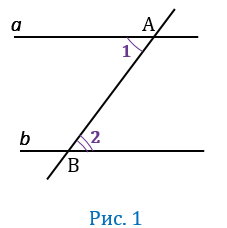
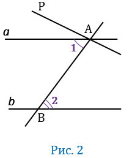
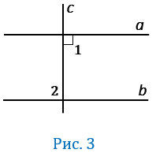

Теорема
Если две параллельные прямые пересечены секущей, то накрест лежащие углы равны.
Доказательство
Пусть параллельные прямые а и b пересечены секущей АВ. Докажем, что накрест лежащие ∠1 и ∠2 -равны (Рис.1).

Предположим, что углы 1 и 2 не равны друг другу. Отложим от луча АВ ∠РАВ, равный углу ∠2, так, чтобы ∠РАВ и ∠ 2 были накрест лежащими углами при пересечении АР и b секущей АВ (Рис.2).

По построению накрест лежащие углы ∠РАВ и ∠ 2 равны, значит АР∥b (По признаку параллельности двух прямых). То есть мы получили, что через точку А проходят прямые а и АР параллельны прямой b. Но это противоречит аксиоме параллельности прямых
Значит наше предположение неверно и ∠1 = ∠2. Теорема доказана.
Следствие
Если прямая перпендикулярна к одной из двух параллельных прямых, то она перпендикулярна и к другой.
Пусть прямая a∥b, прямая c⏊a (Рис.3). Доказать c⏊b.
Доказательство

Прямая c пересекает прямую b, при этом a∥b значит c пересекает и прямую b (следствие из аксиомы параллельных прямых). При пересечении параллельных прямых a и b с секущей c образуются равные накрест лежащие углы: ∠1 = ∠2 (по теореме о накрест лежащих углах). По условию c⏊a, т.е. ∠1 = 90°, значит и ∠2 = 90°, т.е. c⏊b. Теорема доказана.